Sello "TU MARCA" — redondo antiguo
Blanco sobre negro y negro sobre blanco. PNG con transparencia, vectorial en origen (1200 px), con desgaste de goma estampada.
1 · Los dos pedidos
2 · Variantes del diseño

3 · Aplicado sobre las portadas superposición en vivo
Estas tarjetas cargan la portada limpia + el PNG transparente del sello encima: es más liviano que incrustarlo en cada foto.
 Hamburguesería
Hamburguesería
 Pizzería
Pizzería
 Minutas
Minutas
 Sushi
Sushi
 Cafetería
Cafetería
4 · Archivos
| Archivo | Qué es | Tamaño |
|---|---|---|
sello-blanco-fondo-negro.png / .jpg | Sello blanco sobre fondo negro (el pedido) | 1200×1200 |
sello-negro-fondo-blanco.png / .jpg | Sello negro sobre fondo blanco (el pedido) | 1200×1200 |
sello-blanco-transparente.png | Sin fondo, para superponer sobre las fotos | 1200×1200 |
sello-negro-transparente.png | Idem en negro | 1200×1200 |
*-transparente-limpio.png | Sin desgaste, bordes nítidos | 1200×1200 |
sello-wordmark-*.png | Variante con "TU MARCA" grande al centro | 1200×1200 |
web/sello-{blanco,negro}-{128,256,384,512}.png | Tamaños listos para web | 128–512 |
../portadas-con-sello-blanco/ y -negro/ | Las 5 portadas con el sello ya incrustado | 573×253 |
5 · Cómo usarlo
Superposición (recomendado): una sola imagen de sello reutilizada en todas las tarjetas.
<div class="rubro">
<img class="rubro__foto" src="/assets/portadas/pizzeria.jpg"
width="573" height="253" loading="lazy"
alt="Pizzería — pizza napolitana al horno de barro">
<img class="rubro__sello" src="/assets/sello/sello-blanco-512.png" alt="" aria-hidden="true">
</div>
<style>
.rubro{ position:relative; border-radius:12px; overflow:hidden; }
.rubro__foto{ display:block; width:100%; height:auto; }
.rubro__sello{ position:absolute; right:14px; bottom:10px; width:27%; height:auto;
transform:rotate(-9deg); opacity:.92; pointer-events:none; }
</style>
También podés usar directo las portadas ya selladas de portadas-con-sello-blanco/ si no querés tocar el HTML.